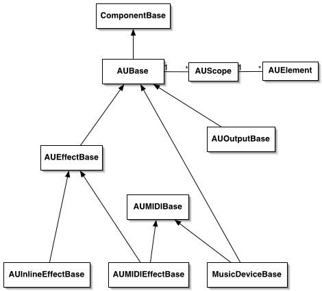

AudioUnit SDK Overview
The classes described here are used for implementing your own AudioUnits.
You should be familiar with the AudioUnit API
first, before you begin using this to implement an AudioUnit. While it appears that there
is a lot of code here that you must understand, actually the SDK is doing a lot for you
and the part of the SDK you need to deal with is limited. Refer to the sample code
to see examples of how this SDK is used to write an AudioUnit.
AUBase is the base class for an AudioUnit. There are several subclasses of
AUBase which support various flavors of AudioUnits, such as effects (AUEffectBase) and
music devices (MusicDeviceBase). Effect classes contain instances of the AUKernelBase
class as the place to perform the signal processing and contain the related state information
for each buss.
AudioUnit parameters are referenced by scope and element. Each AudioUnit has
several AUScope objects which are containers for parameter values.
There are four scopes referenced by the constants kAudioUnitScope_Input,
kAudioUnitScope_Output, kAudioUnitScope_Global, or kAudioUnitScope_Group.
Each scope of an AudioUnit contains elements which contain the parameters
that can be set in that scope. Elements are implemented via the AUElement class
and its subclasses.
For input and output scopes, elements represent busses and each buss
contains some number of channels of audio. For global scope there is
a single element containing all of the parameters that affect the
entire audio unit. For group scope, the parameters affect that group.
There are a set of classes for implementing user interface views in Carbon.
The documentation on these classes will be forthcoming.
This is a class diagram showing inheritance and containment of AUBase and its subclasses.
Arrows indicate inheritance and lines with 1..* indicate containment.
AUBase contains instances of AUScope which in turn contain instances of AUElement.
